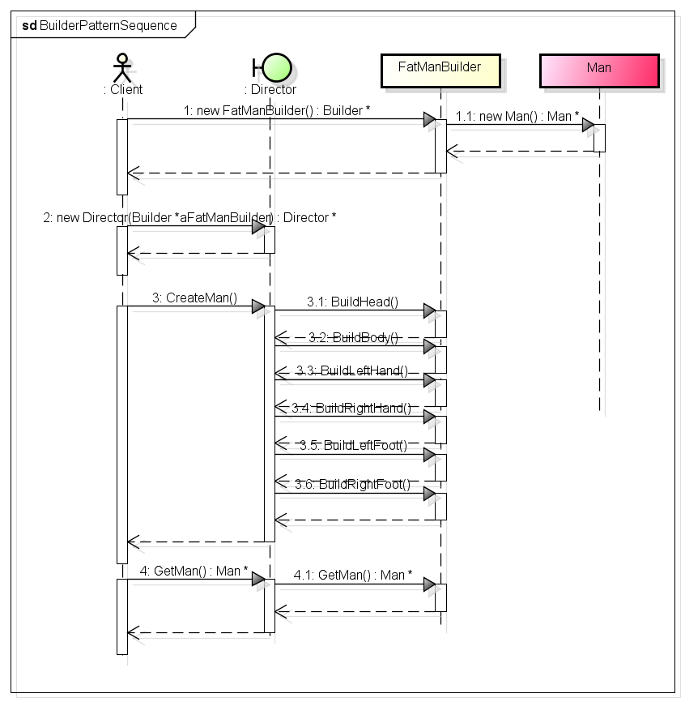

建造者模式
在GOF的《设计模式可复用面向对象软件的基础》中是这样说的：将一个复杂对象的构建与它的表示分离，使得同样的构建过程可以创建不同的表示。
这句话，似懂非懂的。一个复杂对象的创建，其通常是由很多的子对象构成；如果一个对象能够直接就创建好了，那么也不会称之为复杂对象。由于项目中需求的变化，这个复杂对象的各个部分经常会发生剧烈的变化，但是，不管怎么变化，将它们组合在一起，组成一个复杂的对象的事实是不会变的。建造者模式就提供了一种“封装机制”来将各个对象的变化隔离开，最终，组合成复杂对象的过程是不会变的。
在《大话设计模式》一书中，例举了一个很好的例子————建造小人。建造一个小人，要分为六步：头部、身体、左手、右手、左脚和右脚。与抽象工厂模式不同的是，建造者模式是在Director的控制下一步一步的构造出来的，在建造的过程中，建造者模式可以进行更精细的控制。不管人的头部、身体、左手、右手、左脚或者右脚如何变化，但是最终还是由这几部分组合在一起形成一个人，虽然是同一个建造过程，但是这个人就会有不同的表示，比如，胖子，瘦子，个高的，个低的等等。
1 UML图
类图如下：

时序图如下：
2 代码实现

1 #include <iostream> 2 using namespace std; 3 4 typedef enum MANTYPETag 5 { 6 kFatMan, 7 kThinMan, 8 kNormal 9 }MANTYPE; 10 11 class Man 12 { 13 public: 14 void SetHead(MANTYPE type){ m_Type = type; } 15 void SetBody(MANTYPE type){ m_Type = type; } 16 void SetLeftHand(MANTYPE type){ m_Type = type; } 17 void SetRightHand(MANTYPE type){ m_Type = type; } 18 void SetLeftFoot(MANTYPE type){ m_Type = type; } 19 void SetRightFoot(MANTYPE type){ m_Type = type; } 20 void ShowMan() 21 { 22 switch (m_Type) 23 { 24 case kFatMan: 25 cout<<"I'm a fat man"<<endl; 26 return; 27 28 case kThinMan: 29 cout<<"I'm a thin man"<<endl; 30 return; 31 32 default: 33 cout<<"I'm a normal man"<<endl; 34 return; 35 } 36 } 37 38 private: 39 MANTYPE m_Type; 40 }; 41 42 // Builder 43 class Builder 44 { 45 public: 46 virtual void BuildHead(){} 47 virtual void BuildBody(){} 48 virtual void BuildLeftHand(){} 49 virtual void BuildRightHand(){} 50 virtual void BuildLeftFoot(){} 51 virtual void BuildRightFoot(){} 52 virtual Man *GetMan(){ return NULL; } 53 }; 54 55 // FatManBuilder 56 class FatManBuilder : public Builder 57 { 58 public: 59 FatManBuilder(){ m_FatMan = new Man(); } 60 void BuildHead(){ m_FatMan->SetHead(kFatMan); } 61 void BuildBody(){ m_FatMan->SetBody(kFatMan); } 62 void BuildLeftHand(){ m_FatMan->SetLeftHand(kFatMan); } 63 void BuildRightHand(){ m_FatMan->SetRightHand(kFatMan); } 64 void BuildLeftFoot(){ m_FatMan->SetLeftFoot(kFatMan); } 65 void BuildRightFoot(){ m_FatMan->SetRightFoot(kFatMan); } 66 Man *GetMan(){ return m_FatMan; } 67 68 private: 69 Man *m_FatMan; 70 }; 71 72 // ThisManBuilder 73 class ThinManBuilder : public Builder 74 { 75 public: 76 ThinManBuilder(){ m_ThinMan = new Man(); } 77 void BuildHead(){ m_ThinMan->SetHead(kThinMan); } 78 void BuildBody(){ m_ThinMan->SetBody(kThinMan); } 79 void BuildLeftHand(){ m_ThinMan->SetLeftHand(kThinMan); } 80 void BuildRightHand(){ m_ThinMan->SetRightHand(kThinMan); } 81 void BuildLeftFoot(){ m_ThinMan->SetLeftFoot(kThinMan); } 82 void BuildRightFoot(){ m_ThinMan->SetRightFoot(kThinMan); } 83 Man *GetMan(){ return m_ThinMan; } 84 85 private: 86 Man *m_ThinMan; 87 }; 88 89 // Director 90 class Director 91 { 92 public: 93 Director(Builder *builder) { m_Builder = builder; } 94 void CreateMan(); 95 96 private: 97 Builder *m_Builder; 98 }; 99 100 void Director::CreateMan() 101 { 102 m_Builder->BuildHead(); 103 m_Builder->BuildBody(); 104 m_Builder->BuildLeftHand(); 105 m_Builder->BuildRightHand(); 106 m_Builder->BuildLeftHand(); 107 m_Builder->BuildRightHand(); 108 } 109 110 int main(int argc, char *argv[]) 111 { 112 Builder *builderObj = new FatManBuilder(); 113 Director directorObj(builderObj); 114 directorObj.CreateMan(); 115 Man *manObj = builderObj->GetMan(); 116 if (manObj == NULL) 117 return 0; 118 119 manObj->ShowMan(); 120 121 delete manObj; // 感谢张小张同学的review 122 manObj = NULL; 123 124 delete builderObj; 125 builderObj = NULL; 126 127 return 0; 128 };
output:
I'm a fat man
上面这个例子比较杂，但是也是建造者模式的应用。下面这个例子是建造者最一般，最简单的实现方法：
1 #include <iostream> 2 #include <vector> 3 using namespace std; 4 5 class Builder; 6 7 // Product 8 class Product 9 { 10 public: 11 void AddPart(const char *info) { m_PartInfoVec.push_back(info); } 12 void ShowProduct() 13 { 14 for (std::vector<const char *>::iterator item = m_PartInfoVec.begin(); 15 item != m_PartInfoVec.end(); ++item) 16 { 17 cout<<*item<<endl; 18 } 19 } 20 21 private: 22 std::vector<const char *> m_PartInfoVec; 23 }; 24 25 // Builder 26 class Builder 27 { 28 public: 29 virtual void BuildPartA() {} 30 virtual void BuildPartB() {} 31 virtual Product *GetProduct() { return NULL; } 32 }; 33 34 // ConcreteBuilder 35 class ConcreteBuilder : public Builder 36 { 37 public: 38 ConcreteBuilder() { m_Product = new Product(); } 39 void BuildPartA() 40 { 41 m_Product->AddPart("PartA completed"); 42 } 43 44 void BuildPartB() 45 { 46 m_Product->AddPart("PartB completed"); 47 } 48 49 Product *GetProduct() { return m_Product; } 50 51 private: 52 Product *m_Product; 53 }; 54 55 // Director 56 class Director 57 { 58 public: 59 Director(Builder *builder) { m_Builder = builder; } 60 void CreateProduct() 61 { 62 m_Builder->BuildPartA(); 63 m_Builder->BuildPartB(); 64 } 65 66 private: 67 Builder *m_Builder; 68 }; 69 70 // main 71 int main() 72 { 73 Builder *builderObj = new ConcreteBuilder(); 74 Director directorObj(builderObj); 75 directorObj.CreateProduct(); 76 Product *productObj = builderObj->GetProduct(); 77 if (productObj == NULL) 78 { 79 return 0; 80 } 81 productObj->ShowProduct(); 82 83 delete productObj; 84 productObj = NULL; // 谢谢宾零同学的review 85 delete builderObj; 86 builderObj = NULL; 87 }
output:
PartA completed PartB completed
通过比较上面的两个例子，可以很容易的把建造者模式的骨架抽象出来。
3 使用要点
建造者模式生成的对象有复杂的内部结构，将分步骤的去构建一个复杂的对象，分多少步是确定的，而每一步的实现是不同的，可能经常发生变化；
在上面的例子中，我们都看到了最终生成的Man和Product都没有抽象类，这又导出建造者适用的一种情况，当需要创建复杂对象的过程中，复杂对象没有多少共同的特点，很难抽象出来时，而复杂对象的组装又有一定的相似点时，建造者模式就可以发挥出作用。简单的说，可能使用了建造者模式，最终建造的对象可能没有多大的关系，关于这一点，阅读《设计模式可复用面向对象软件的基础》中的建造者模式时是最有体会的。
4 总结
一个复杂对象是由多个部件组成的，建造者模式是把复杂对象的创建和部件的创建分别开来，分别用Builder类和Director类来表示。用Director构建最后的复杂对象，而在上面Builder接口中封装的是如何创建一个个部件（复杂对象是由这些部件组成的），也就是说，Director负责如何将部件最后组装成产品。这样建造者模式就让设计和实现解耦了。
刚开始接触建造者模式的时候，最容易把建造者和抽象工厂模式混淆了。由于而这都属于创建型的设计模式，所以二者之间是有公共点的，但是建造者模式注重于对象组合，即不同的小对象组成一个整体的复杂大对象，而抽象工厂模式针对于接口编程，只是对外提供创建对象的工厂接口，不负责对象之后的处理。
建造者模式，是一个比较复杂，不容易权衡的设计模式。大家应该更多的阅读开源代码，理解他人是如何使用该模式的。从实际的应用中学习设计模式。
本页共17段，1347个字符，3674 Byte(字节)